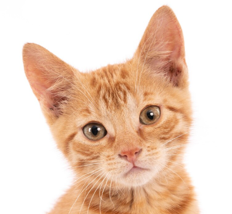
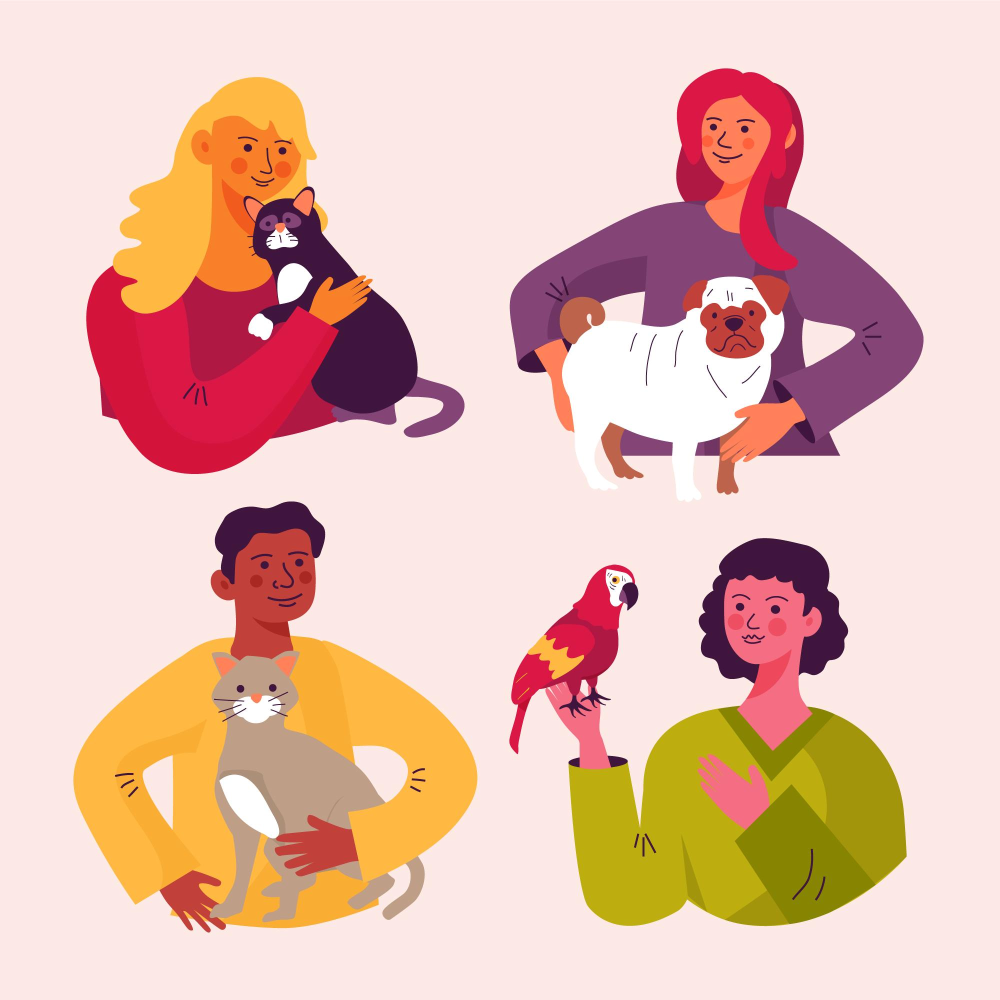
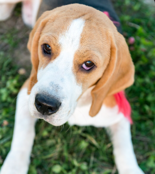
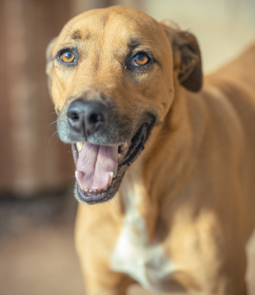
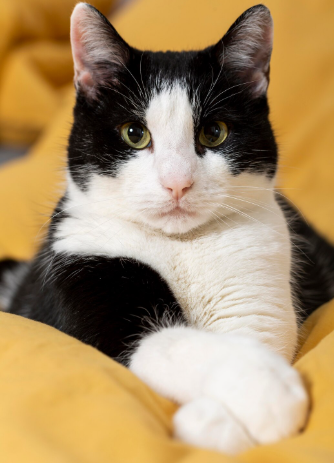
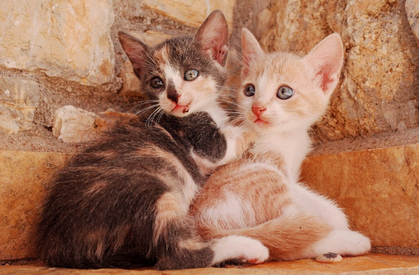
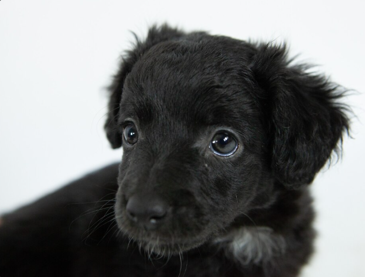

Mimi
Gatinho dócil, já vacinado e castrado. Bem ativo, adora brincadeiras que o faça correr.
Vacinado
8 meses
Mais detalhes →
O MiauLar é uma plataforma pensada para facilitar a adoção responsável de pets e conectar pessoas a animaizinhos que procuram uma família.


Gatinho dócil, já vacinado e castrado. Bem ativo, adora brincadeiras que o faça correr.

Cachorro já adestrado, castrado e vacinado. Obediente e brincalhão, adora tomar banho.

Cadela castrada e vacinada. Calma e preguiçosa, ideal para quem mora em apartamento. Já sabe passear na guia.

Gato já castrado e vacinado. Adora brincar mas não gosta muito de barulho. Adequado para quem não tem muitas crianças em casa.

Gatinhos irmãos já vacinados. Dois brincalhões, ainda são um pouco medrosos mas aos poucos ficam familiarizados. Apenas adoção conjunta!

Cachorrinho já vacinado. Bem brincalhão mas um pouco tímido.
O processo foi pensado para incentivar uma adoção consciente e responsável.
Veja as informações e os cuidados de cada animal disponível e se apaixone por eles.
Demonstre seu interesse e conte um pouco sobre você e o lar que deseja oferecer.
Se selecionado, a equipe entrará em contato para realizar a entrevista presencial.